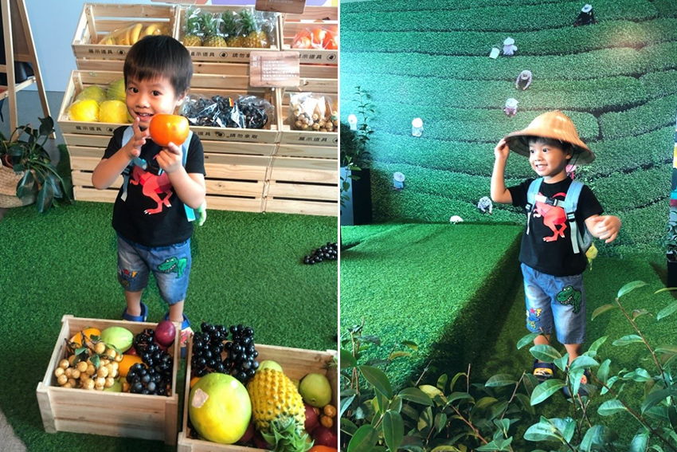

前陣子台北101為了振興觀光從5月到9月底三點以前去觀景台門票只要150元 (原價600元)，想想曾經拜訪了巴黎鐵塔，東京晴空塔，但竟然沒上去過台灣之光101，又加當前的國人優惠活動，決定帶著兒子來一趟101朝聖且站上台北頂點俯瞰整個台北城。
台北101為台灣最高建築，總高有508公尺，到達101如要去觀景台，需要到5樓購買門票，5樓有個環景的LED牆播放著全景，拍隊買票時小朋友可以在那邊拍照或觀看，票到手後就可以依序入場搭乘高速電梯，這部曾經是全世界最快速的電梯，電梯直達89樓觀景台只要35秒就到達，速度非快，本來還怕兒子會耳壓不適，但完全不會且超級平穩，完全感受不出電梯在動，只能從電梯螢幕顯示知道目前樓層，搭乘電梯時天花板會有燈光秀，美麗的星空圖以假亂真。
到達89樓時，整個台北映入眼前，數以萬計的建築、街道與車輛瞬間渺小，360度的景觀窗，呈現出了不同風貌的美景，一面繁榮的市區與另一面綠意盎然的山林，交織出了人文與自然的狂想曲，壯麗的景觀美不勝收，整個城市就好像唾手可得的積木，如同兒子玩具箱內的珍寶，繞了一圈俯視整個台北的景觀， 開始尋找幾個較熟悉且有名的地標，原來從上面看聞名已久的「大巨蛋」，流利平滑的簡單線條，勾勒出獨特的外表，而在它對面的國父紀念館顯得渺小，借此和兒子介紹了台北幾個有名的地標，是個非常好的親子時光。
在89樓有商店和紀念品店，且也許多有趣的擺設供民眾拍照打卡或體驗， 例如水果和茶葉的展示區， 仿真的水果攤讓小朋友認識了台灣水果，小朋友一起玩得不亦樂乎，另一處有茶梯田造景，還有斗笠供民眾能穿戴，令人彷彿在高山茶園中，呼吸著清新的茶香，此外週末還有一些DIY的活動，是直接現場報名而且還是免費的，很適合親子一起同樂。
|  |
89樓參觀完後可以走到91樓的戶外觀景台，要去91樓必須看老天爺是否賞臉，如果氣候不佳時是不開放的，而幸運的是當天天氣尚可，能夠不用隔著玻璃俯瞰大地，戶外架設了高倍數的望遠鏡，投幣使用望遠鏡觀看，如同由上帝的視角來觀察人世間的動態一般，且從戶外觀景台抬頭能很近距離看到101的尖塔，第一次感覺離尖塔那麼近，在戶外遼闊的視野加上微風徐徐吹來，壓力瞬間煙消雲散。
91樓參觀完後可以從樓梯走到88樓，觀賞世界最大風阻尼球，直徑有5.5公尺，重量660公噸，它主要是鞏固平衡101大樓，能防風抗震的結構，且這顆漆上金黃色的巨大阻尼球，感覺很壯觀，也是很值得參觀和拍照。
由於這次是白天參觀101，距離晚上還很久，沒辦法等到夜景，有機會一定要晚上再去一次，夜晚的景觀應該更令人嘆為觀止。雖然150元優惠已經結束了，但陸續有推出一些活動，像是60歲以上的長輩可以免費入場，而一般民眾到年底前有半價優惠只要300元，很推薦大家可以把握機會，一家人來一趟101的高空輕旅行，俯視整個台北都會區，會讓人印象深刻。